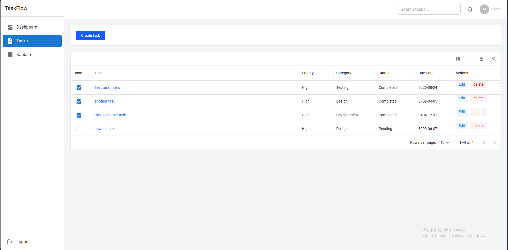

My Work

Personal Portfolio Website
A responsive personal portfolio website showcasing my skills, projects, experience, and contact information. Built with HTML, CSS, and JavaScript.
View Live
Coffee Shop Landing Page
A modern and responsive landing page for a coffee shop featuring a hero section, product highlights, and contact information. Designed with a clean and engaging user experience.
View Live
Responsive Portfolio Website
A modern responsive portfolio website designed to present professional information, skills, and projects with a clean layout across desktop and mobile devices.
View Live
Cake Shop Website
A visually appealing cake shop website featuring a welcoming design, product presentation, and clear sections to help customers explore the business.
View Live
TaskFlow – Task Management App
A responsive task management dashboard built with React, featuring task CRUD operations, search, filtering, sorting, Kanban board, authentication UI, form validation, and localStorage persistence.
View Live